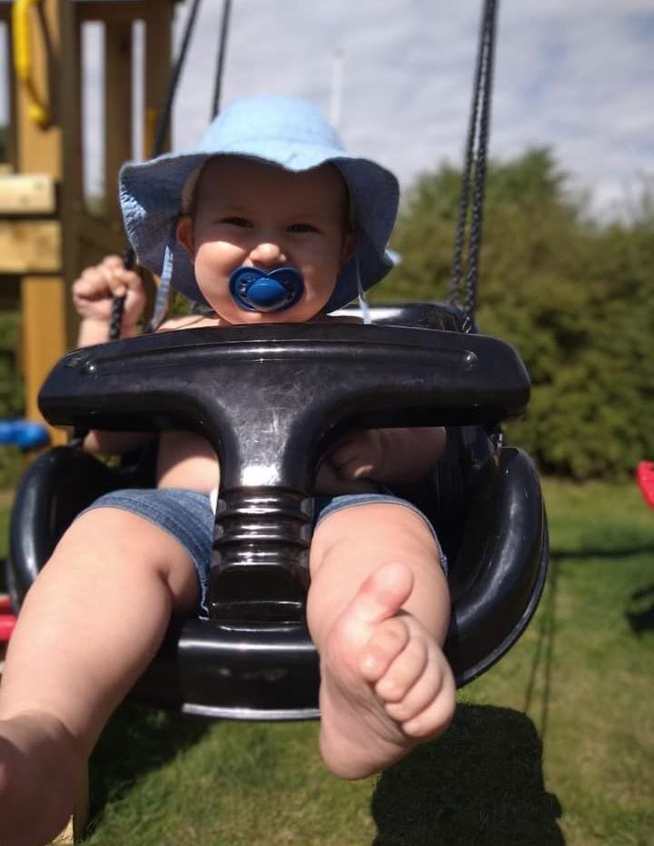
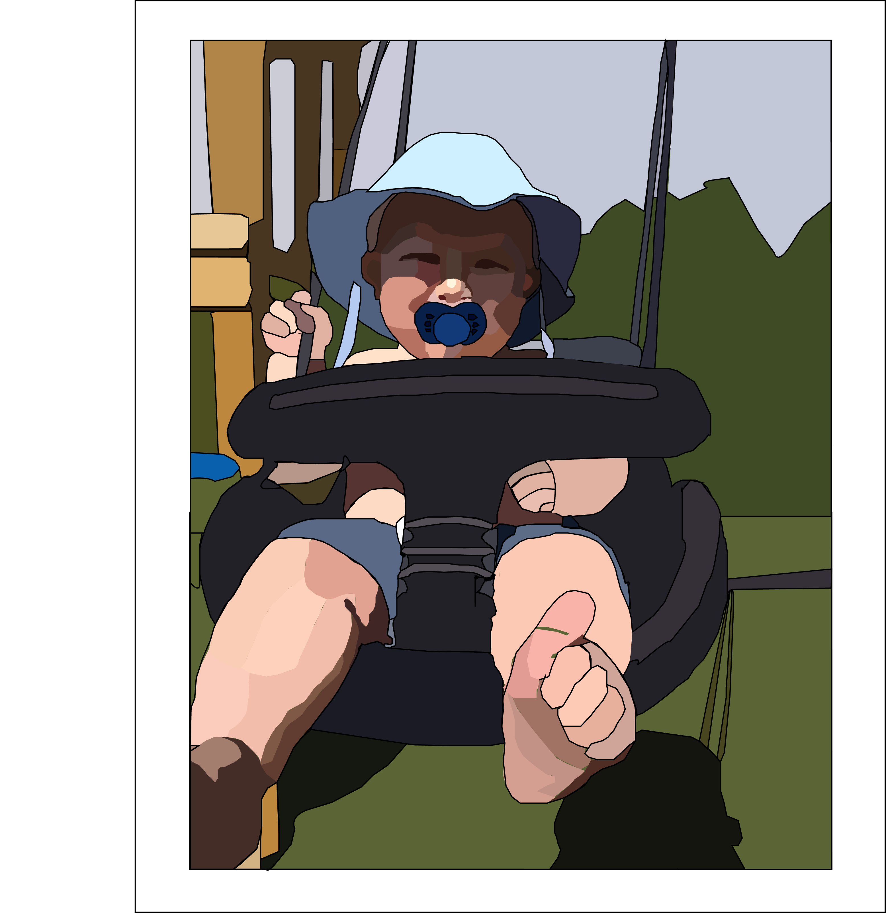

MIN PORTFOLIO
Før
I Adobe Illustrator kan man forvandle sine billeder om til gode og sjove illusioner og figurer ved hjælp af programmets kreative funktioner og værktøjer.
Efter
Ved hjælp fra Illustrator har jeg kunne lave en sød fødselsdagsgave til min moster. Hun havde bedt om at dette billede af hendes lille søn skulle forvandles om til en lille tegneserie figur.

Et andet eksempel af hvad vi har lavet i Illustrator, er et selvportræt, jeg valgte et outline-billede af Min kæreste og Jeg.
I Adobe XD kan man udarbejde forskellige prototyper til forskellige behov, derudover kan man lave layouts og wireframes, samarbejde og dele forskellige filer, hvilket gør XD til et fedt værktøj at arbejde med. Ved hjælp af Adobe XD har jeg i samarbejde med nogle andre multimediedesignere lavet en funktionel prototype til en datingapp for ældre.